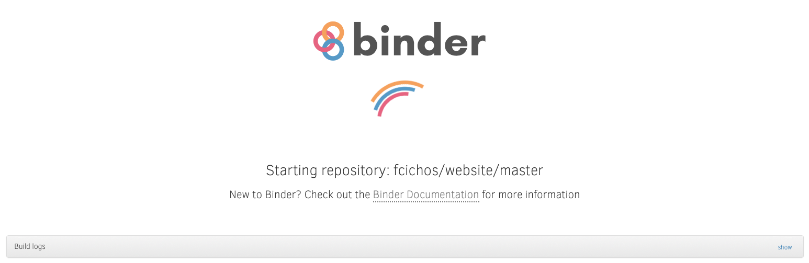

This Website¶
This website will contain all the information that are required for our Deep Learning Module Course course. It is not yet complete, but it will be updated each week and you will find a new lecture and a new assignment every week. The lecture notebooks will be accompanied with videos explaining the lecture contents but you may get along with just reading as well. And just to give you the chance of interacting and discussing we have also created a discussion forum at the MONA website , which you can reach with your login and password for that course. The forum has different categories. We hope that you will use the forum intensively to ask questions.
{kind=link}
You will be guided from here to several resources that you can use to learn programming in Python. Thereby we will make use of some great tools in the web, like
myBinder service to host Jupyter Notebooks (https://mybinder.org). The Binder project offers an easy place to share computing environments to everyone
When you are exploring the following website you will notice the following icon on several places.

This icon indicates that this webpage is based on a Jupyter Notebook. Rather than just looking at the website, you may click on the icon and the myBinder service will be opened to allow you to interactively use the notebook. Please be patient and wait until binder has started. All notebooks on myBinder will be hosted temporarily. If you show inactivity for to long, the server will close the connection. If you are finsihed working on a notebook, you may download it to keep a copy. Go ahead and click on the icon to get an empty notebook.
GitHub and GitHub Pages for hosting notebooks and website (https://github.com). GitHub is a great place to host you collaborative coding projects including version control. In the upper right corner, you will also find a link to the GitHub repository hosting the notebooks.
{kind=link}
{kind=link}
Anaconda Jupyter package for creating the notebooks (https://www.anaconda.com/distribution/). The anaconda package privides you with the Jupyter Notebook environment including Python. If you want to use Jupyter at home without online access, this is a good package to install.
{kind=link}